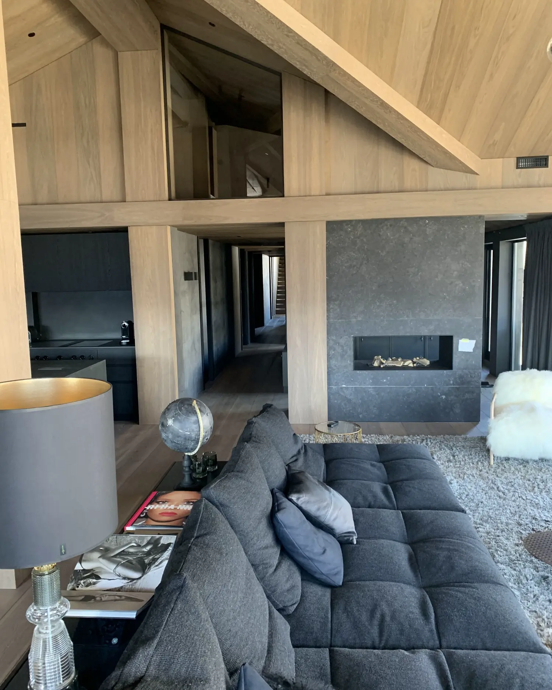

Found
Located by divers in lakes and peat bogs, then chosen by hand.
Ancient bog oak and bog ash, carbon-dated and handcrafted in Lithuania into floors, stairs, walls and bespoke interiors, specified for architects, designers and interior specialists.
Bog trees fell into lakes and bogs long ago, and the water kept them. Every trunk is located by hand, lifted, dated and slowly dried before a single board is made.
Located by divers in lakes and peat bogs, then chosen by hand.

Lifted from the water; a sample is carbon-dated.

Dried slowly and under control: rushing this step cracks the wood.
Cut, layered, stained and finished by hand in our workshop in Lithuania.
Bog oak and bog ash are our signature. Alongside them we work with oak, elm, ash and black walnut. Choose a wood to see its specification.
From private homes to yachts and commercial interiors, the material follows the room. Residences in Norway, Switzerland, France, Germany, Cyprus and the USA, and yachts.
Wide planks, parquet, stairs and walls for homes where every surface is considered.

Stable multilayer boards for interiors that live with changing temperature and humidity.

Floors, walls and ceilings made to measure for lobbies, showrooms and public interiors.

Cellars, tables and pieces crafted by hand from the same wood as the floor.

Technical information for each wood, ready before the first call. Ask for any of these documents during your consultation.
Values marked TBC come from the design mock-up and are awaiting confirmation by Big Foot Floors.
Discuss this specificationLong years under water and peat leave their mark on a trunk: its colour, its age, its character. We match the tone to your palette in consultation.




Describe the space and share plans, references and the mood you are after.
We invite you to talk it through: species, pattern, format and finish for your project.
The material, pattern and finish are agreed with you before production starts.
Produced in our workshop in Lithuania and installed by our own craftsmen, wherever your project is.
We respect our clients’ privacy, so we do not always share the name or photos of a project.


“The craft has passed through three generations of our family, and bog wood asks for all of it.”
Describe your project and we will invite you to a consultation to talk it through.
Your request is in. We will be in touch to arrange a consultation. (Prototype: nothing was sent.)